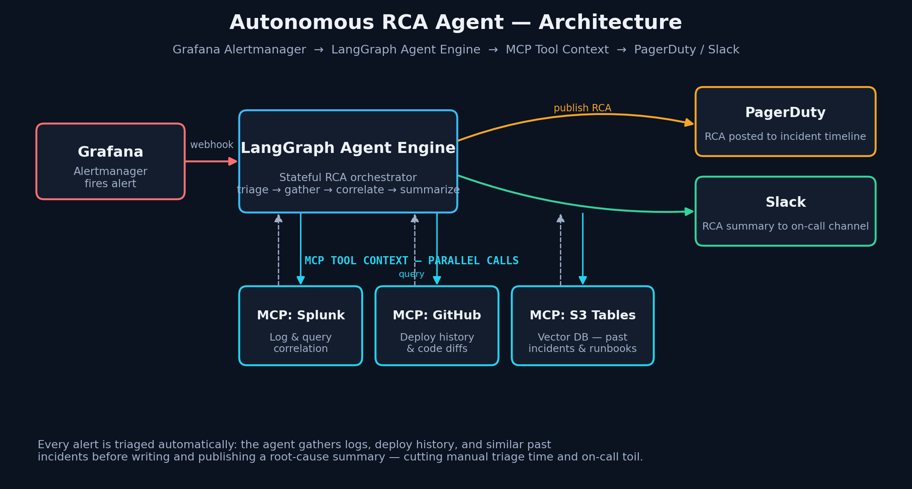
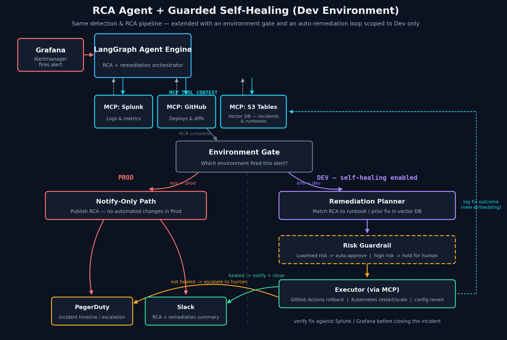

The problem: triage is still manual
Alertmanager tells you that something broke. It rarely tells you why. The on-call engineer still has to pull logs from Splunk, check whether a recent deploy touched the affected service, and remember whether this looks like an incident from three weeks ago. That work is repetitive, time-boxed under pressure, and a major source of on-call burnout — even though most of it follows the same pattern every time.
I built an autonomous Root Cause Analysis (RCA) agent to own that first pass, so the on-call engineer opens the incident already holding a synthesized explanation instead of a blank dashboard.
Architecture: alert to root cause in one automated pass
The agent is orchestrated with LangGraph, which models the RCA workflow as an explicit state graph — triage, gather, correlate, summarize — rather than a single long prompt. That matters for reliability: each node has a defined input/output contract, can retry independently, and leaves an inspectable trace of how the agent reached its conclusion.
When Grafana Alertmanager fires a webhook, the graph fans out to three tool integrations over the Model Context Protocol (MCP), run in parallel:
- Splunk MCP — pulls and correlates logs and metrics around the alert window.
- GitHub MCP — checks recent deploys, commits, and diffs to the affected service.
- S3 Tables MCP (vector store) — searches embeddings of past incidents and runbooks for similar failure signatures.
The agent synthesizes those three evidence streams into a root-cause summary and publishes it automatically: the RCA is posted to the PagerDuty incident timeline, and a condensed version goes to the on-call Slack channel — before a human has opened a single dashboard.

Using MCP instead of hand-rolled API clients for each tool keeps the integration layer swappable — Splunk could become Datadog, GitHub could become GitLab, without touching the graph logic itself.
Extending the graph: guarded self-healing in Dev
RCA closes the "why" gap. The natural next question is whether the agent can close the "now what" gap too — at least somewhere safe. Production stays strictly notify-only: no environment where a customer-facing incident is live should have an agent making unsupervised changes. Dev is a different story, and it's where most of the same class of failures (a bad rollout, a crashed pod, a stale config) can be fixed by a small, well-understood action.
So the same LangGraph graph gained three new nodes and one hard branch:
- Environment Gate — reads alert metadata and routes Prod alerts to the notify-only path, unconditionally. Only Dev alerts continue into the self-healing branch.
- Remediation Planner — matches the RCA against the vector store for a prior fix or runbook, and proposes a candidate action (rollback a deploy, restart or scale a workload, revert a config change).
- Risk Guardrail — classifies the proposed action. Low/medium-risk actions are auto-approved; anything higher-risk is held for a human, even in Dev.
- Executor — applies the approved action via MCP (a GitHub Actions rollback workflow or a Kubernetes restart/scale call), then re-checks Splunk and Grafana to verify the alert actually cleared before closing the incident.

Two design choices carry most of the weight here. First, the environment gate is a hard branch, not a policy flag buried in configuration — Prod physically cannot reach the executor node. Second, every outcome (healed or escalated) gets written back into the S3 Tables vector store as a new embedding, so the next RCA — in any environment — has one more real example to match against. The system gets slightly better at diagnosis every time it's used.
If the executor's fix doesn't resolve the alert on verification, the graph doesn't retry blindly — it escalates to PagerDuty and Slack exactly like a Prod incident would, so a stuck auto-remediation never quietly sits unresolved.
What changed operationally
The measurable win isn't "fewer incidents" — it's faster, more consistent triage and less repetitive manual digging for on-call engineers. Every alert now arrives with a first-pass explanation attached, common Dev failures resolve themselves inside the guardrails, and the RCA archive compounds over time instead of living in someone's memory of "didn't this happen before?"
The bigger lesson was architectural: treating the agent as an explicit graph with tool access via MCP — rather than a single opaque prompt — is what made it trustworthy enough to extend into Dev remediation without expanding the blast radius in Prod.